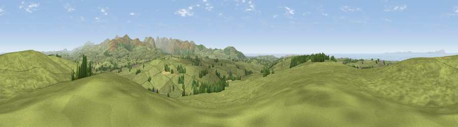

Viewpoint near Arlecdon
#3282 in England · top 31% of its area beats it · near ArlecdonWhere it is
The exact computed spot (NY 04125 20825). Click the marker for map links.
The view, rendered

A 360° render of this exact spot computed from the terrain model, tree cover and land cover — summer colours, afternoon light, calibrated against photographs of famous viewpoints. Real trees, hedges and buildings will differ in detail.
The panorama
Grey silhouette: terrain skyline in each direction (720 bearings, Earth curvature and refraction included). Dashed green: skyline with trees (+15 m) and buildings (+8 m) as obstacles. Blue strip: how far the ground is visible on each bearing.
Where the view opens
Wedge length = distance to the farthest visible ground on that bearing (vegetation-aware). Rings at 10, 25 and 50 km.
What fills the view
89% grassland · 5% woodland · 4% water · 1% cropland
Angular shares of the visible panorama (visual magnitude), not map area. Landscape diversity 0.20 (0–1 Shannon).
Key numbers
More beautiful places nearby
The staircase of upgrades: each row has a higher view potential than everything closer. Driving times are estimates from straight-line distance, calibrated against real road routing — check an actual route before setting out.
| Place | Direction | Drive | Score |
|---|---|---|---|
| Viewpoint near Arlecdon | NNE · 0 km | ~2 min | 74.5 |
| Viewpoint near Low Moresby | W · 4 km | ~9 min | 76.5 |
| Knock Murton | ESE · 6 km | ~12 min | 85.5 |
| Blake Fell | E · 7 km | ~15 min | 86.9 |
| Crag Fell | SE · 8 km | ~17 min | 89.1 |
| Ullock Pike | ENE · 22 km | ~36 min | 89.4 |
| Long Side | ENE · 22 km | ~37 min | 89.5 |
| Viewpoint near Finsthwaite | SE · 47 km | ~68 min | 90.3 |
54.57352, -3.48462 · source: screening · position refined by local search. Computed location — check access rights before visiting.